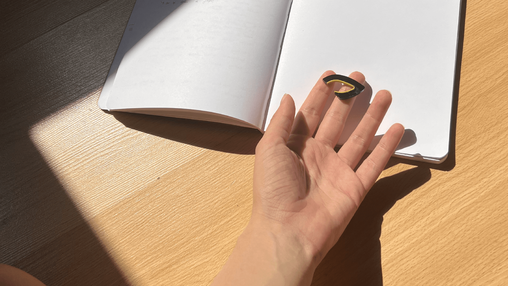
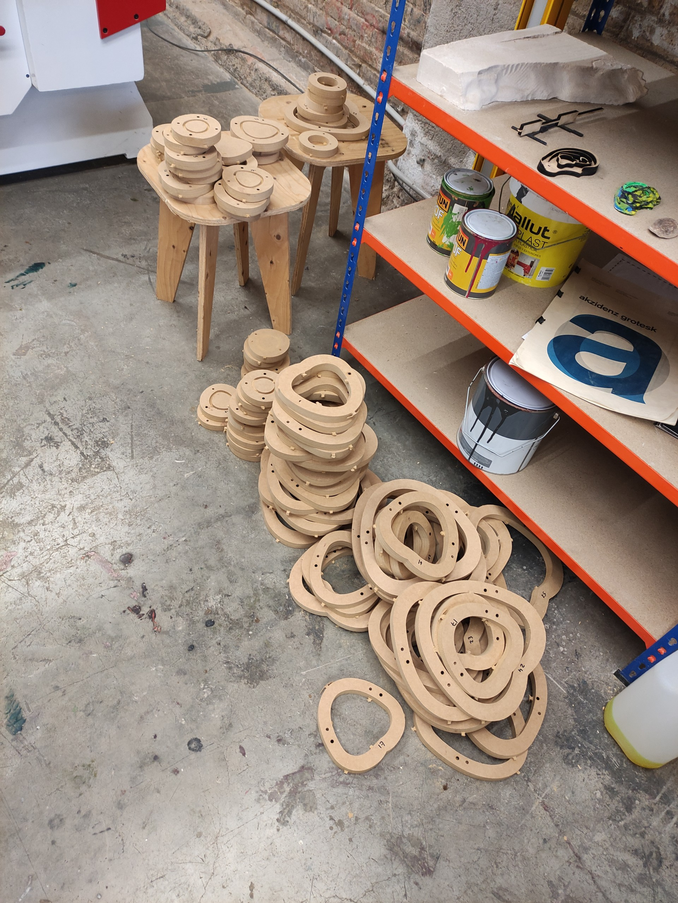
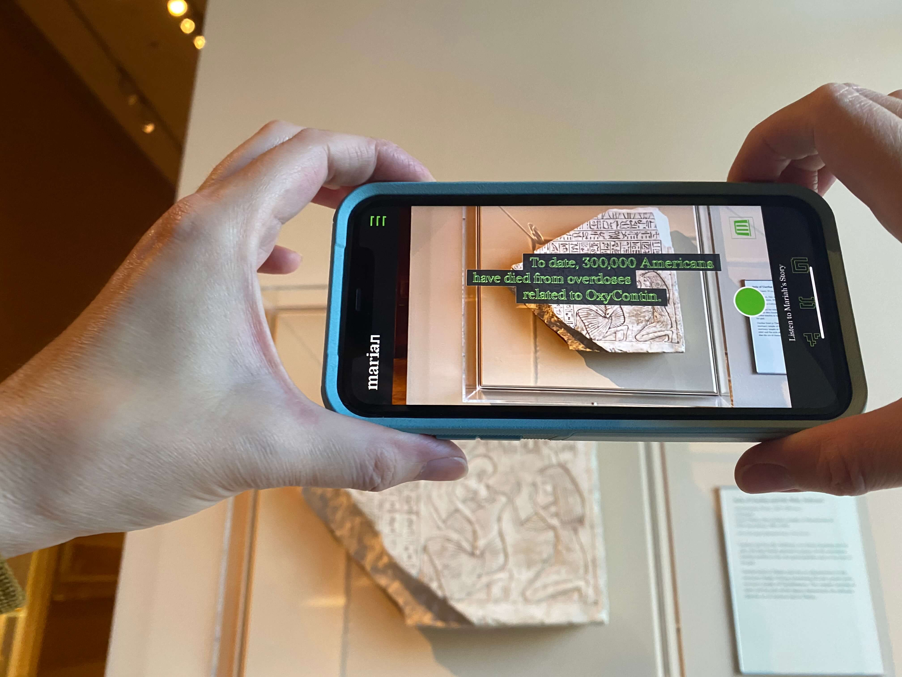
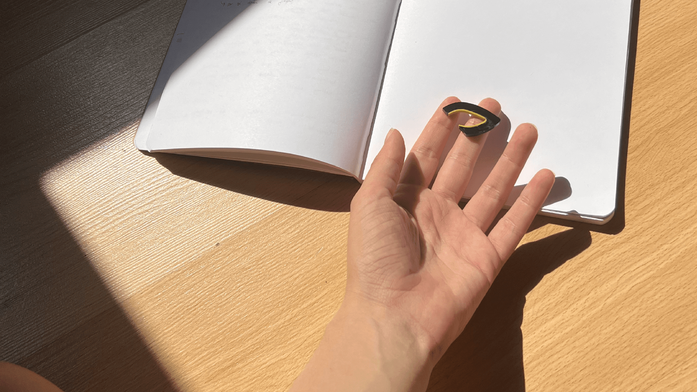
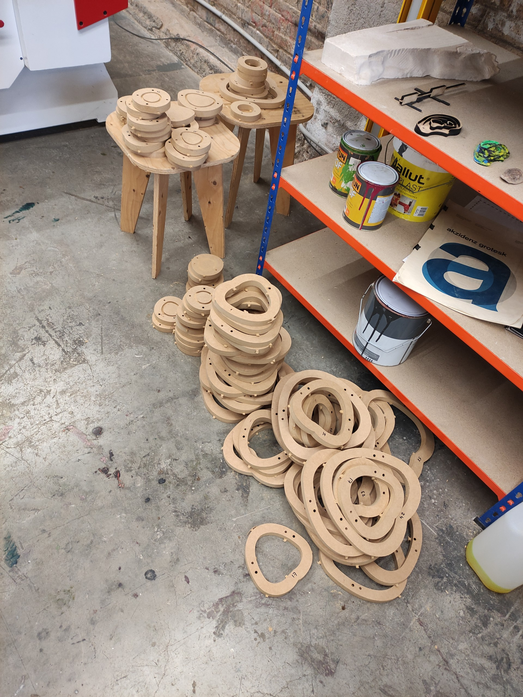
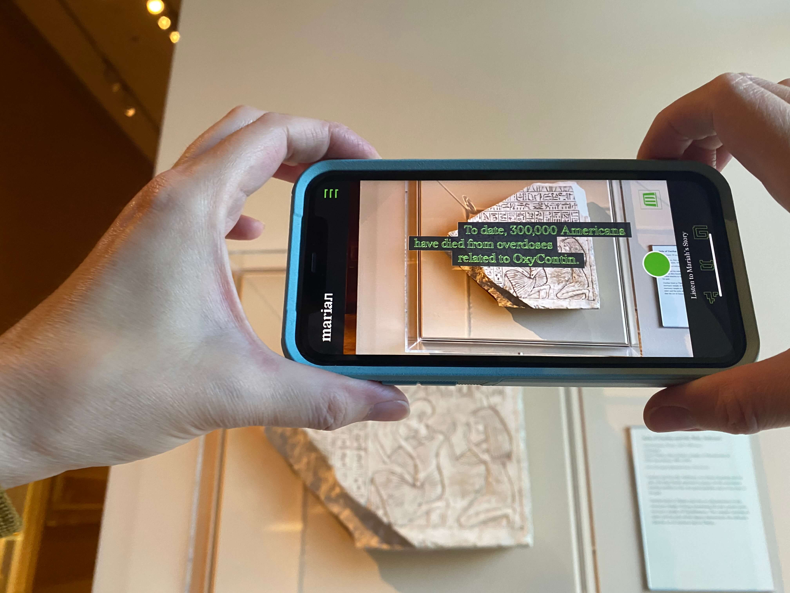

Curiosity

It is what unites us, leading us to flow between different disciplines throughout our individual careers
By adding our individual experiences, we decided to create a space for collective experimentation
a lab
Adaptability
We embrace the fluid nature of liquid—effortlessly adapting to diverse formats and disciplines


Experiment
Create & Learn
Share
Experiment
Creative Process & Technical support
En una fase inicial del proyecto aportamos ideas creativas, teneniendo en cuenta el mensaje que se quiere comunicar, la idea. En esta fase, también experimentamos e investigamos aquellas tecnologías que consideramos que puedan potenciar el mensaje y generar un mayor impacto.
Create & Learn
Prototyping & Software development
Desarrollamos y prototipamos utilizando diferentes medios

 





El aprendizaje constante forma parte de nuestro proceso y nos permite crear cada proyecto utilizando las herramientas que mejor se adapten
Share
Knowledge exchanges
Research
Artistic practice
En cada creación, la investigación sobre la tecnología como un catalizador de emociones se sitúa en el centro de nuestra práctica. Usamos los medios digitales para potenciar experiencias, dejando un impacto en aquellas personas que las viven